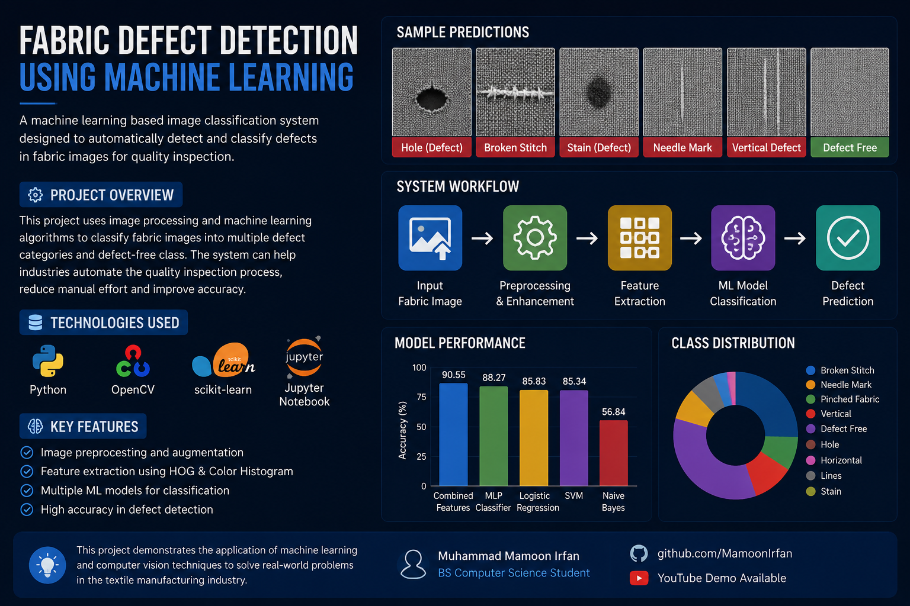
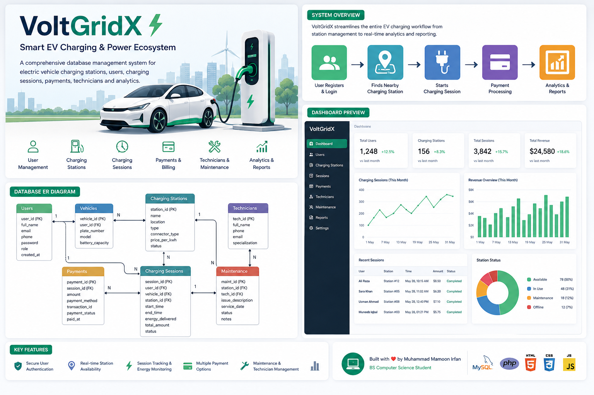
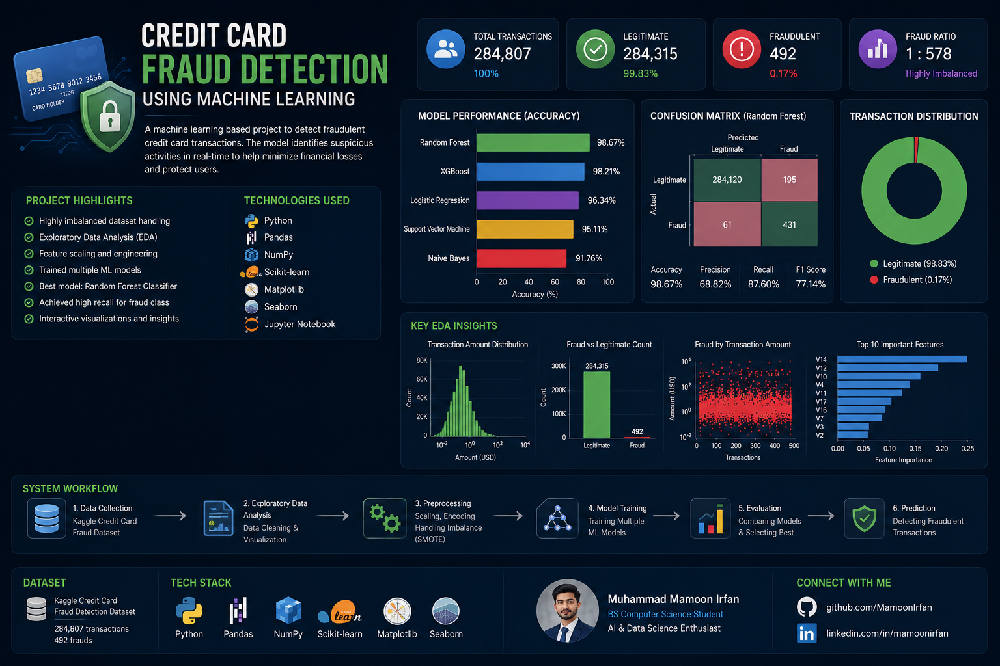
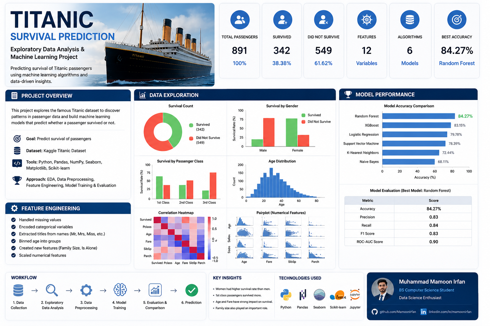
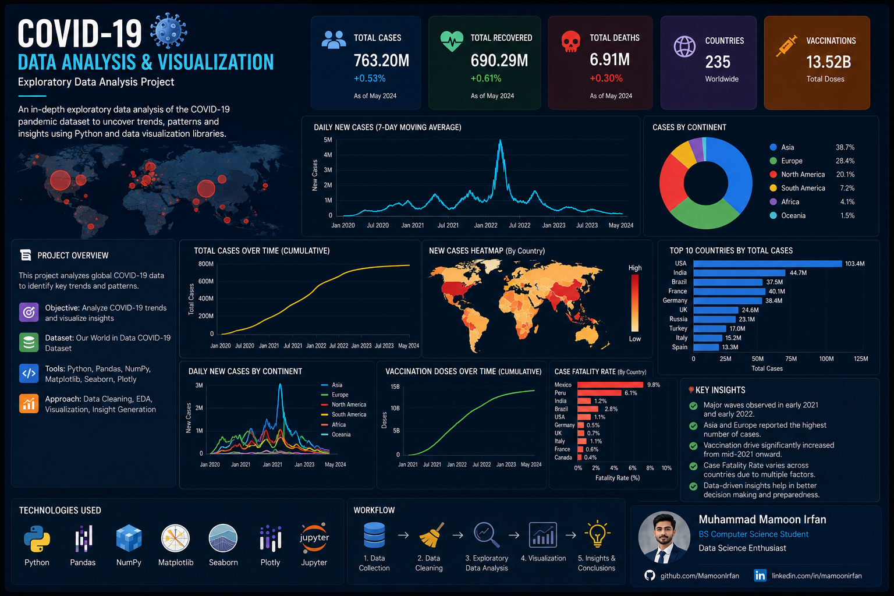

Fabric Defect Detection using Machine Learning
A machine learning based image classification project developed for detecting different fabric defects using feature extraction and classification algorithms.
GitHub YouTube Demo
A machine learning based image classification project developed for detecting different fabric defects using feature extraction and classification algorithms.
GitHub YouTube Demo
A database management system for electric vehicle charging stations including users, charging sessions, payments and administration.
GitHubDesigned and developed a responsive multipage portfolio website using HTML, CSS and JavaScript.
GitHubDeveloped and tested an immersive Virtual Reality zombie survival game for the Meta Quest 2 (Oculus) platform using the Unity Engine. Contributed to gameplay testing, bug identification, performance optimization, and quality assurance to deliver a smooth VR experience.
Technologies: Unity Engine, C#, Meta Quest 2 (Oculus), VR Development
Worked on the development and quality assurance of a Virtual Reality football simulation game for Meta Quest 2 (Oculus). Performed gameplay validation, feature testing, bug reporting, and user experience improvements throughout the development cycle.
Technologies: Unity Engine, C#, Meta Quest 2 (Oculus), VR Development
Contributed to the development and testing of an educational Virtual Reality simulation game where players diagnose and treat virtual animals. Focused on gameplay validation, bug tracking, interaction testing, and overall software quality.
Technologies: Unity Engine, C#, Meta Quest 2 (Oculus), VR Development

Machine learning project developed for detecting fraudulent transactions using predictive models.
GitHub
Data science project based on the Titanic dataset using machine learning techniques.
GitHub
Exploratory data analysis and visualization project using Python.
GitHub